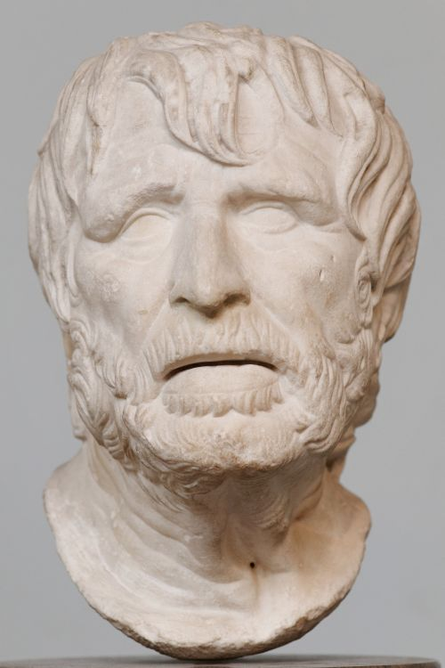

Луций Анней Сенека
Обо мне: римский философ-стоик, поэт и государственный деятель. Воспитатель Нерона и один из крупнейших представителей стоицизма. Сын Луция (Марка) Аннея Сенеки Старшего (выдающегося ритора и историка) и Гельвии, младший брат Юния Галлиона. Автор «Нравственных писем к Луцилию», ряда философских трактатов и трагедий